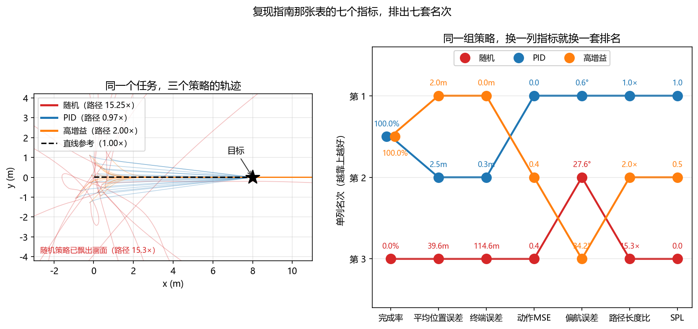
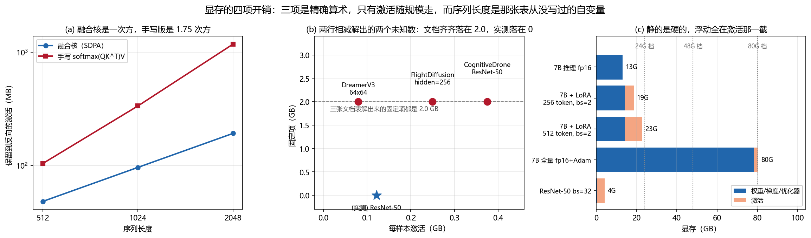

02 - 复现指南：UAV-Flow Colosseo — 真实世界的细粒度语言条件无人机控制基准¶
预计阅读：12 分钟 | 前置知识：Python 深度学习基础、PyTorch 使用经验、Hugging Face Transformers 基本操作
UAV-Flow 出自北航 CoLA Lab，是一篇基准论文：它定义了 Flying-on-a-Word（Flow）任务——无人机根据原子化的语言指令执行短程、反应式的飞行动作——并配套发布数据集、可部署的控制框架与仿真评测套件。仓库里给出的基线是在 OpenVLA 与 Pi-0 上微调得到的。
本指南的可复现边界：论文的实机部分不可复现（需要真机、空域与飞手）。本指南覆盖的是仓库能跑通的那部分：数据下载、权重加载、微调与离线评测（nDTW）。看到"直接部署、无 sim-to-real gap"这类表述时，那是论文对自身框架的陈述，不是你可以照文档复现出来的结果。
目录¶
1. 项目概述¶
- 论文标题: UAV-Flow Colosseo: A Real-World Benchmark for Flying-on-a-Word UAV Imitation Learning
- arXiv: 2505.15725
- GitHub: buaa-colalab/UAV-Flow（173 stars）
- Hugging Face 权重:
wangxiangyu0814/OpenVLA-UAV - Hugging Face 数据集:
wangxiangyu0814/UAV-Flow - 核心思想: 把"语言条件飞行"切到细粒度：指令是原子的（对应一个即时动作），轨迹来自真实环境中的专家飞手。论文用 UAV Flow 基准同台比较 VLN 与 VLA 两条范式，给 OpenVLA 与 Pi-0 各做了一版无人机适配作为基线。
技术路线¶
视觉观测（RGB图像） + 原子语言指令（"Fly forward"）
↓
基础 VLA（OpenVLA / Pi-0）
↓
动作输出 → 无人机速度指令
↓
batch_run_act_all.py 汇总轨迹 → metric.py 算 nDTW
2. 仓库结构¶
UAV-Flow/
├── README.md
├── OpenVLA-UAV/ # 训练与推理侧：OpenVLA 的无人机适配
│ ├── prismatic/ # OpenVLA 的模型与数据处理包
│ └── vla-scripts/ # finetune_uav.sh / openvla_act.py 等入口
├── UAV-Flow-Eval/ # 评测侧
│ ├── openvla_act.py # 起一个推理服务
│ ├── batch_run_act_all.py # 批量跑轨迹
│ └── metric.py # nDTW 轨迹相似度
└── dataset_tools/ # 数据侧工具
真实入口是 bash vla-scripts/finetune_uav.sh（微调）、python vla-scripts/openvla_act.py（推理服务）、python batch_run_act_all.py（批量推理）、python metric.py（算 nDTW）。没有 configs/、models/、scripts/、envs/、utils/ 这些目录。
3. 环境配置¶
3.1 克隆仓库¶
3.2 创建 Python 环境¶
# 使用 conda
conda create -n uavflow python=3.10 -y
conda activate uavflow
# 安装 PyTorch（按仓库 README 的 CUDA 版本）
pip install torch torchvision --index-url https://download.pytorch.org/whl/cu124
# 安装项目依赖
pip install -r requirements.txt
3.3 关键依赖说明¶
仓库 README 给出的环境要点：PyTorch 走 pytorch-cuda=12.4，另需 flash-attn==2.5.5。除此之外没有公开一份固定版本的 requirements.txt 内容，按 OpenVLA-UAV/prismatic 的实际依赖装即可。
3.4 安装 OpenVLA 基础模型¶
OpenVLA 不是通过 PyPI 安装的包，而是本地安装仓库里自带的 prismatic 包：
4. 数据集下载¶
4.1 从 Hugging Face 下载¶
UAV-Flow 数据集托管在 Hugging Face 上，包含训练和评估数据。
# 方法 1：使用 huggingface-cli
pip install huggingface_hub
huggingface-cli download --repo-type dataset wangxiangyu0814/UAV-Flow --local-dir ./data/uavflow_dataset
# 方法 2：使用 Python API
from huggingface_hub import snapshot_download
snapshot_download(
repo_id="wangxiangyu0814/UAV-Flow",
repo_type="dataset",
local_dir="./data/uavflow_dataset"
)
4.2 数据集内容说明¶
数据集的实际形态是 54 个 train-*.parquet 分片，字段只有四个：
image 是帧图像，log 是原始遥测序列——指令文本与动作都编码在这条 log 里，而不是抽成独立的 instructions.jsonl 或 trajectories/ 目录。
4.3 下载 OpenVLA 预训练权重¶
5. 模型推理¶
5.1 下载微调权重¶
5.2 运行推理¶
仓库的推理分两个终端：先起一个动作服务，再批量跑数据。
5.3 动作归一化的 key¶
推理时有一个容易踩的点：OpenVLA 会把动作按数据集统计量归一化，反归一化时要给出对应的 key。仓库 README 的配置里写的是：
用错 key 会让输出的动作量级整体跑偏（思路见第 8 节 Q5）。
6. 模型训练/微调¶
6.1 训练配置¶
微调的入口是一个 shell 脚本，超参写在脚本里：
6.2 启动训练¶
6.3 训练资源需求¶
仓库与论文都没有给出训练资源表。 要在自己的机器上估算，只能按第 7 节末尾那把"显存四笔账"的尺子自己量。
7. 仿真评估环境¶
7.1 仿真环境：UnrealCV¶
论文用的仿真环境是 UnrealCV（不是 UnrealZoo Gym）。论文原句："We utilize UnrealCV as the simulation environment for the UAV." UnrealZoo 系列是另一条线，仓库 README 的致谢里可能会提到，但它不是这篇的评测环境。
7.2 运行评估¶
评测分两步：先用 batch_run_act_all.py 跑出模型生成的轨迹，再用 metric.py 算 nDTW（归一化动态时间规整），用生成轨迹与参考轨迹的对齐程度来打分。
7.3 评估指标：为什么只有 nDTW¶
论文自己承认，在真实场景里采用定量评测指标本身就很困难（"it remains challenging to adopt quantitative evaluation metrics in real-world scenarios"）。所以这条链路给出的不是"完成率 / 位置误差"这类绝对量，而是轨迹相似度——一个相对量：只回答"生成的轨迹与参考轨迹有多像"。
7.4 一条容易被误读的对比¶
很多复现指南会把「Action MSE」和「任务完成率 / 路径效率」并列成一张表，暗示它们各自衡量"性能"的一个侧面。它们衡量的不是同一件事：前者是离线指标（在一批固定状态上比较动作与专家的差），后者要跑完闭环才知道。本文件末尾的「动作 MSE 低，就一定飞得好吗？」一节用 quad_sim 量了这对指标的分歧，值得先读一遍再决定报告里放哪些数。
8. 常见问题与解决方案¶
Q1: Hugging Face 下载超时¶
# 使用镜像
export HF_ENDPOINT=https://hf-mirror.com
huggingface-cli download wangxiangyu0814/UAV-Flow --local-dir ./data/uavflow_dataset
Q2: GPU 显存不足（OOM）¶
- 减小
batch_size（如从 8 降到 2） - 启用 LoRA 微调而非全参数微调
- 使用
gradient_checkpointing - 使用
bf16或fp16混合精度训练
微调若要改 batch size 或开混合精度，得改 vla-scripts/finetune_uav.sh 里的参数——仓库没有 YAML 配置文件，把这类开关写进配置文件的写法在本仓库行不通。
Q3: OpenVLA 模型加载报错¶
# 确保 transformers 版本足够新
pip install transformers>=4.36.0
# 如果报 trust_remote_code 错误，在加载时添加参数
model = AutoModelForVision2Seq.from_pretrained(
model_path, trust_remote_code=True
)
Q4: UnrealCV 环境起不来¶
- 确认装的是 UnrealCV（论文用的仿真环境），不是 UnrealZoo 系列
- UnrealCV 需要一个打包好的 UE 场景可执行文件，先确认场景能单独启动
- WSL2 用户需使用 WSLg 或配置 X11 转发
Q5: 推理动作量级整体跑偏¶
- 先查
unnorm_key是否为"sim"（第 5.3 节）——归一化 key 用错会让所有动作整体缩放 - 确认加载的是
wangxiangyu0814/OpenVLA-UAV，不是数据集仓库 - 检查遥测
log的解析顺序是否与训练时一致（数据集只存了原始 log，没有切片好的动作序列）
动手验证：动作 MSE 低，就一定飞得好吗？¶
复现指南里常见的一张表会把五项指标并列：Task Success Rate、Position Error、Path Efficiency、Collision Rate 是跑完仿真才知道的，Action MSE 不用跑仿真——拿一批数据、比较预测动作和专家动作就能算。这个差别看着只是"省不省事"，实际意味着两列在回答不同的问题。
这一节把动作 MSE 和几个闭环指标摆在一起量：构造一组策略，让动作 MSE 给出和完成率相反的结论。三个策略是随机动作、标准串级 PID、把位置环增益调大 6 倍的 PID。
本节实验跑在
quad_sim的简化质点模型上，不是 UnrealCV，场景里也没有障碍物（Collision Rate 这一列量不到）。要证的是离线指标和闭环指标的关系，不是复现某一组具体数值。
三个策略与七个指标¶
import torch
from common.quad_sim import QuadSim, expert
N, T, GOAL = 128, 400, torch.tensor([8.0, 0.0, 1.5])
KP_PID, KP_HOT, KD, REACH_TOL = 0.30, 1.80, 0.70, 1.0 # 标准增益 / 调大 6 倍 / 容差
torch.manual_seed(0); start = 0.6 * torch.randn(N, 2) # 起点铺在原点附近，直线距离 8 m
def policy(env, goal, kp):
"""kp=0 退回随机动作；否则串级 PID，第四维让机头指向目标。"""
if kp == 0:
return 2 * torch.rand(env.n, 4) - 1
a = expert(env, goal, kp=kp, kd=KD)
err = torch.atan2(goal[:, 1] - env.p[:, 1], goal[:, 0] - env.p[:, 0]) - env.rpy[:, 2]
a[:, 3] = (2.0 * torch.atan2(torch.sin(err), torch.cos(err)) / 5.0).clamp(-1, 1)
return a
def rollout(kp):
env = QuadSim(N); env.reset()
env.p[:, :2], env.p[:, 2] = start, GOAL[2]
goal = GOAL[None, :].repeat(N, 1)
ps, obs = [env.p[:, :2].clone()], [env.obs()]
for _ in range(T):
env.step(policy(env, goal, kp))
ps.append(env.p[:, :2].clone()); obs.append(env.obs())
return torch.stack(ps), torch.stack(obs)
def action_mse(kp, obs):
"""离线指标：同一批状态上比较策略动作与专家动作，只算前三维。"""
e = QuadSim(obs.shape[0]) # 借一个空壳当状态容器
e.p, e.v, e.rpy, e.om = obs[:, :3], obs[:, 3:6], obs[:, 6:9], obs[:, 9:]
g = GOAL[None, :].repeat(obs.shape[0], 1)
return ((policy(e, g, kp) - expert(e, g))[:, :3] ** 2).mean().item()
_, pid_obs = rollout(KP_PID)
batch = pid_obs[::8].reshape(-1, 12) # 离线数据集：三条策略共用同一批状态
for nm, kp in (("随机", 0), ("PID", KP_PID), ("高增益", KP_HOT)):
pos, _ = rollout(kp)
d = (pos - GOAL[:2]).norm(dim=-1) # 到目标的距离 (T+1, N)
seg = (pos[1:] - pos[:-1]).norm(dim=-1).sum(dim=0) # 实际路程
straight = (GOAL[:2] - start).norm(dim=-1) # 直线距离
done = d[-1] < REACH_TOL # 终端误差落在容差内
print(f"{nm:<4} 完成率 {done.float().mean()*100:5.1f}% 平均位置误差 "
f"{d.mean(0).mean():5.2f}m 终端误差 {d[-1].mean():6.2f}m 动作MSE "
f"{action_mse(kp, batch):5.2f} 路径 {(seg/straight).mean():5.2f}x "
f"SPL {(done*straight/torch.maximum(seg, straight)).mean():5.2f}")
action_mse 的关键在那句"借一个空壳当状态容器"：动作 MSE 是离线指标，定义就是在一批固定状态上比较动作。三条策略必须共用同一批状态，否则测的就不是同一件事了。本节的这批状态从 PID 的轨迹里采出来。
本地实测结果¶
随机 完成率 0.0% 平均位置误差 39.57m 终端误差 114.61m 动作MSE 0.43 路径 15.25x SPL 0.00
PID 完成率 100.0% 平均位置误差 2.54m 终端误差 0.26m 动作MSE 0.00 路径 0.97x SPL 1.00
高增益 完成率 100.0% 平均位置误差 1.95m 终端误差 0.00m 动作MSE 0.41 路径 2.00x SPL 0.50
动作 MSE 这一列里，随机策略 0.43、高增益 0.41，只差 3%。只看这一列会得出"两者差不多"，可它们的完成率是 0% 和 100%——一个 8 秒里飘出画面一百多米，一个稳稳停在目标上。
原因是动作 MSE 的参照物是专家动作，不是任务结果。随机动作在数值上偏离专家并不远，三个通道平均偏离 0.55，而每个通道的量程是 ±1；差的是方向，闭环积分几十步之后就完全不是一回事了。这正是 7.4 节把 Action MSE 和另外四项并列时最容易忽略的一条：它衡量的是"像不像专家"，不是"飞得好不好"。
完成率这一列同样分不开东西：PID 和高增益都是 100%。能分开的是 Path Efficiency——0.97× 对 2.00×。
标准 PID 那个 0.97× 小于 1，按 7.4 节的定义（实际路径 / 最短路径）这不该发生。原因是它的实际路程是在 XY 平面上按步累加的，而 8 秒回合结束时它还差 0.26 m 没到，走的路自然比起点到终点的直线短。这个 0.97 说明的是"没走完"，不是"路径更优"；把它当成一条效率指标读数就会看反。
全部数字来自
quad_sim的简化质点模型（无风、无传感器噪声、无视觉），128 架并行、8 秒固定回合、到达容差 1.0 m。回合长度是硬的：标准 PID 在 8 秒里还没收敛完，那个 0.26 m 是 P 控制的稳态余差，换个回合长度这几个数都会动。

【待验证】接入 PX4 SITL：离线指标在真机上要重算吗¶
未在本地验证：本节代码需要 Ubuntu + PX4 + MicroXRCEAgent 才能运行，本仓库的验证环境是 Windows，没有跑过。字段名请以你安装的
px4_msgs版本为准。
9.2 节的结论迁移到真机时，最要紧的一条是：动作 MSE 会变得更不可信，不是更可信。真机上专家动作本身就要重录（quad_sim 里那个 expert() 是仿真控制器，不是飞手的操作），而真机状态的分布比仿真宽得多，拿一批窄分布的数据算出来的 MSE 只能说明"在这批数据上像专家"。
要真在真机上算 Action MSE，得把数据集和评估集分开采：一批状态用来评估，另一批用来训练，并且两批的起点、风扰、载荷都要有差异，否则量到的是模型记住了那批数据、不是它学会了飞行。
from rclpy.qos import QoSProfile, ReliabilityPolicy, DurabilityPolicy, HistoryPolicy
from px4_msgs.msg import VehicleLocalPosition, VehicleAttitude, TrajectorySetpoint
def px4_qos(depth=10):
"""PX4 话题统一用 BEST_EFFORT + TRANSIENT_LOCAL，否则收不到数据。"""
return QoSProfile(reliability=ReliabilityPolicy.BEST_EFFORT,
durability=DurabilityPolicy.TRANSIENT_LOCAL,
history=HistoryPolicy.KEEP_LAST, depth=depth)
class ActionPairRecorder(Node):
"""真机上的 A-B 对比：同一状态，策略给的动作 vs 专家给的动作。"""
def __init__(self):
super().__init__('action_pair_recorder')
self.state, self.pairs = None, []
self.create_subscription(VehicleLocalPosition, '/fmu/out/vehicle_local_position',
self.on_pos, px4_qos())
self.create_subscription(VehicleAttitude, '/fmu/out/vehicle_attitude',
self.on_att, px4_qos())
def on_att(self, m):
# 四元数是 w 在前的 [w,x,y,z]；PX4 另有 q_d 是姿态设定值，别拿错
self.state = (*self.state, m.q[0], m.q[1], m.q[2], m.q[3])
def on_policy_action(self, a_policy):
# 专家动作必须来自同一时刻、同一状态，否则两个"动作"根本不可比
self.pairs.append((self.state, a_policy, expert_action(self.state)))
三点补充：状态对齐（位置 30 Hz、姿态 250 Hz，两个话题时间戳差几毫秒，直接配对会把姿态滞后算进动作误差里）、专家定义（真机上没有现成的专家动作，"专家"要么是飞手遥控记录、要么是另一套经过验证的控制器，这个定义必须写进报告里）、分布外状态（策略飞得越差、轨迹越偏，被评估的状态就越不在这批数据里，动作 MSE 反而可能变小，这是离线指标最反直觉的一处失效）。
运行完整脚本¶
完整脚本（含七列指标的排名表、并列名次的处理、名次折线图）：code/g_eval_metrics.py
动手验证：batch 翻倍，显存为什么不止翻一倍？¶
假设有一张常见的训练资源表，里面两行是同一个模型、同一套 LoRA，只改了 batch：batch_size=4 是 18 GB，batch_size=8 是 40 GB。batch 涨 1 倍、显存涨 1.22 倍，看着比线性还省，但把四项拆开就不是这么回事了。
显存是四笔账：权重 / 梯度 / 优化器状态 / 激活。前三笔和 batch 完全无关 —— 7B 冻结主干加 LoRA r=16，这三笔加起来 13.4 GB，不管你喂多少数据都不动。会随 batch 变的只有激活那一笔。
所以那两行相减就能解出每样本多少激活：
- 18 = 13.4 + 4 × A，解得 A = 1.15 GB
- 40 = 13.4 + 8 × A，解得 A = 3.33 GB
同一个物理量解出两个值，差 2.9 倍。而激活是严格线性的 —— 一个线性项做不出这件事。
激活随 batch 线性，和层数也线性¶
import torch, torch.nn as nn
GB = 2 ** 30
D_MODEL, SEQ, P7 = 4096, 512, 7.0e9 # LLaMA-2 7B 的规模和一段典型输入长度
def activation_bytes(m, x): # 只数激活，参数要按 storage 剔掉
ps = {p.untyped_storage().data_ptr() for p in m.parameters()}
tot = [0]
def pack(t):
if t.untyped_storage().data_ptr() not in ps:
tot[0] += t.numel() * t.element_size()
return t
with torch.autograd.graph.saved_tensors_hooks(pack, lambda t: t):
m(x).sum()
return tot[0]
def block(): # 一层标准 Transformer：注意力 + 4 倍宽的 MLP
return nn.TransformerEncoderLayer(D_MODEL, 32, 4 * D_MODEL, batch_first=True, dropout=0.0)
def static_gb(n_frozen, n_trainable): # LoRA：冻结的只存 fp16，可训练的还带梯度与动量
return (2 * n_frozen + 12 * n_trainable) / GB
torch.manual_seed(0)
LORA16 = 32 * 7 * 2 * D_MODEL * 16 # 每层 7 个投影，各挂一对 d x r（与 06-GeoChat 同口径）
st = static_gb(P7, LORA16)
per_tok = activation_bytes(nn.TransformerEncoder(block(), 1),
torch.randn(1, SEQ, D_MODEL, requires_grad=True)) / SEQ
for bs in (1, 2, 4, 8): # 静态那一项不动，动的只有激活
act = per_tok * 256 * bs * 32 / GB
print(f"bs={bs} 静态 {st:>5.1f}G + 激活 {act:>5.1f}G = {st + act:>5.1f}G")
for bs in (1, 2, 4):
a = activation_bytes(nn.TransformerEncoder(block(), 1),
torch.randn(bs, SEQ, D_MODEL, requires_grad=True))
print(f"bs={bs} 单层激活 {a / 2**20:>7.1f}MB 每样本 {a / bs / 2**20:>6.1f}MB")
本地实测结果¶
bs=1 静态 13.4G + 激活 2.1G = 15.5G
bs=2 静态 13.4G + 激活 4.3G = 17.6G
bs=4 静态 13.4G + 激活 8.5G = 21.9G
bs=8 静态 13.4G + 激活 17.0G = 30.4G
bs=1 单层激活 136.1MB 每样本 136.1MB
bs=2 单层激活 272.1MB 每样本 136.1MB
bs=4 单层激活 544.3MB 每样本 136.1MB
每样本那一列三个数一模一样 —— 激活对 batch 是一次方，没有常数项，也没有二次项。32 层乘上去，512 个 token 时每样本 4.25 GB，256 个 token 时 2.13 GB。
于是这两行：
来源 配置 表里写的 静态 余额 反解 token
示例表 LoRA, bs=4, fp16 18G 13.4G 4.6G 139
示例表 LoRA, bs=8, bf16 40G 13.4G 26.6G 401
第一，这两行不是同一个配置下的两个点，不能拿来插值。 反解出的序列长度一个是 139、一个是 401，差 2.9 倍。这两行还同时换了精度（fp16 → bf16）和硬件（4090 → A100）—— 所以差额不能只记在序列长度头上。但至少能确定：拿那张表在两个 batch 之间做线性外推是会错的，因为除了 batch，还有别的东西在动。这也正是"这张表不是量出来的"的一条旁证。
第二，显存涨得比 batch 快，是因为激活在总量里的占比变了。 bs=4 时 18 GB 里只有 4.6 GB 是激活，bs=8 时 40 GB 里有 26.6 GB 是激活。激活自己涨了 5.8 倍 —— 这才是那 1.22 倍总增幅的来源。静态那 13.4 GB 一直在，它只是被越来越大的激活稀释了。
限制：这里量的是 PyTorch eager 模式下 autograd 保留的张量，而且 PyTorch 2.x 的注意力走 SDPA 融合核，不含 seq² 的注意力矩阵。真机上还会多出框架开销、cuDNN workspace 和显存碎片，所以账面 30 GB 未必等于 nvidia-smi 显示 30 GB。
上面这把尺子按 512 token 标定。真实训练里每条样本的 token 数取决于图像编码后的 patch 数和指令长度，本节没有去测 OpenVLA 实际用了多长 —— 反解出的 139 / 401 是假设只有 batch 在变才成立的推论。

运行完整脚本¶
参考资源¶
- UAV-Flow GitHub: https://github.com/buaa-colalab/UAV-Flow
- 论文: https://arxiv.org/abs/2505.15725
- OpenVLA 论文: https://arxiv.org/abs/2406.09246
- UnrealCV（论文用的仿真环境）: https://github.com/unrealcv/unrealcv
延伸阅读¶
思考题¶
-
显存预算：仓库没给训练资源表。要在一张 24 GB 的卡上跑 7B + LoRA 微调，先算哪几笔账？哪一笔是唯一会随 batch 变的？
-
排障思路：推理出来的动作量级整体跑偏，按第 8 节 Q5 应该先查什么？
-
归一化对齐：
unnorm_key用错会有什么可观测的后果？为什么它不会报错、只会静默地缩放动作？ -
评估协议：用
metric.py算出来的 nDTW，能不能直接和别的论文表格里的"成功率"比？ -
迁移边界：文档给出的评估链路依赖什么环境？论文宣称的"直接部署、无 sim-to-real gap"能不能按这份指南复现出来？